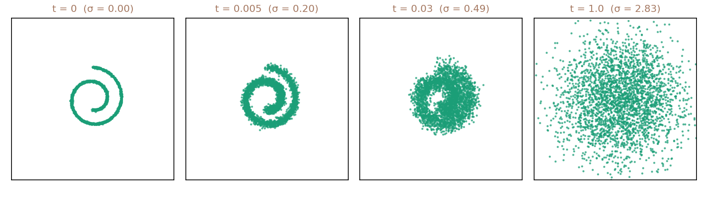
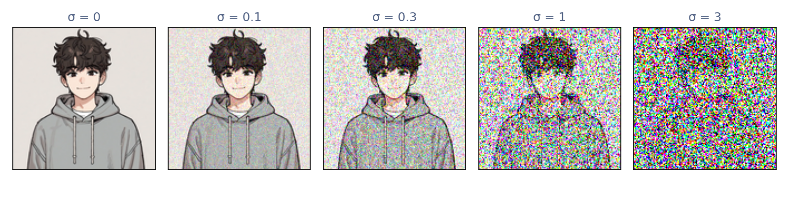

퍼짐: 그림에 잡음을 섞으면
이 장의 물음
고치는 법만 배운 복원기가 순수한 잡음에서 새 숫자를 만들었다. 수리공은 잡음 크기 σ 를 3에서 0.02까지 줄여 가며, 단계마다 「지금 그림은 σ 만큼 망가진 그림이다」라고 믿고 고쳤다. 그 믿음이 맞으려면 망가뜨리는 길이 정확히 정해져 있어야 한다. 학습할 때 그림을 σ 만큼 망가뜨린 방법과, 만들 때 수리공이 지나는 그림들이 같은 길 위에 있어야 하기 때문이다. VAE 는 그림을 어떤 잠재 변수로 보낼지를 인코더가 배워야 해서, 디코더와 서로 기대며 함께 흔들렸다. 이번에는 망가뜨리는 쪽을 우리가 식으로 정해 두고, 고치는 쪽만 배운다. 그러려면 그 길이 어떻게 생겼는지부터 알아야 한다. 「σ = 3 만큼 망가진 그림」이란 정확히 어떤 그림들일까?
수리공의 걸음을 다시 보자. 큰 σ 에서는 어느 숫자가 될지와 큰 꼴이 정해졌고, 작은 σ 에서야 획의 가장자리가 다듬어졌다. 그림을 공간 주파수로 나눠 보면 세기는 굵은 무늬에 몰려 있고, 픽셀마다 따로 뽑은 잡음의 세기 스펙트럼은 평평했다. 잡음을 키워 가면 그림의 무엇이 먼저 덮이고 무엇이 오래 남을까? 잡음을 걷는 가장 좋은 커널이 잡음 크기마다 달랐던 것도 같은 까닭일까? 이 장은 다음 물음에 차례로 답한다.
- 잡음을 조금씩 여러 번 섞으면 모두 얼마나 섞인 것일까? 학습할 때마다 그 여러 단계를 하나씩 밟아야 할까?
- 그림 한 장이 아니라 그림들의 분포는 잡음이 섞이면서 어떤 규칙으로 바뀔까?
- 그 길에서 그림의 어느 대역이 먼저 잡음에 덮이고, 어느 대역이 오래 남을까? 잡음 수준마다 남는 것이 다르다면 무엇이 달라질까?
- 잡음을 언제 얼마나 섞을지는 어떻게 정하며, 정하는 방식이 달라지면 무엇이 달라질까?
순방향 과정: 그림에 잡음을 조금씩 섞기
망가뜨리는 길을 우리가 정해 둔다면 어떤 길이 좋을까? 세 가지를 바랄 수 있다. 계산이 싸야 하고, 끝에 가서는 그림이 무엇이었든 우리가 잘 아는 분포 하나로 모여야 하며, 한 번에 크게 망가뜨리지 않고 조금씩 망가뜨려서 한 걸음씩 되돌리는 일이 쉬워야 한다. 디노이징 오토인코더가 그림을 흔들 때 쓴 규칙, 곧 픽셀마다 정규분포 잡음을 더하는 규칙을 조금씩 되풀이하면 세 가지를 모두 갖춘다. 그런데 「조금씩 여러 번」 더한 잡음은 모두 합쳐 얼마만큼일까?
역사: 구조를 천천히 부수는 과정을 정해 두기
생성 모델을 만드는 사람들은 오래 한 가지 줄다리기에 시달렸다. 그림처럼 복잡한 데이터를 담으려면 모델이 유연해야 하는데, 유연한 모델일수록 학습하고 표본을 뽑고 확률을 계산하기가 어려워진다. 2015년 졸-딕스타인(Jascha Sohl-Dickstein), 와이스, 마헤스와라나탄, 강굴리는 논문 「비평형 열역학을 이용한 깊은 비지도 학습」 첫 문장에 바로 이 줄다리기를 적었다. 그들이 내놓은 길은 물리학에서 빌려 왔다. 잉크 방울이 물에 번지듯 데이터 분포의 구조를 「체계적으로, 천천히」 부수는 과정을 앞으로 가는 쪽에 정해 두고, 구조를 되살리는 거꾸로 가는 과정만 배우는 것이다. 앞으로 가는 쪽은 배울 것이 없으니 다루기 쉽고, 거꾸로 가는 쪽은 한 걸음이 작으니 걸음마다의 모양이 단순하다. 대신 걸음이 수천 번에 이른다. 논문은 이 모델로 「수천 개의 층 또는 시간 단계」를 가진 생성 모델을 빠르게 배우고 표본을 뽑을 수 있다고 적었다.
논문의 첫 그림은 2차원 평면에 말린 김밥 모양(스위스 롤)으로 놓인 점들이 잡음에 섞여 흩어지는 모습이다. 아래는 같은 생각을 이 책의 관례로 다시 그린 것이다. 이 과정의 이름 「확산(diffusion)」을 이어받아, 2020년 호(Jonathan Ho)와 동료들은 논문 「잡음 제거 디퓨전 확률 모델」을 「이 논문은 디퓨전 확률 모델의 진전을 보인다」로 시작했다. 오늘날 디퓨전 모델이라는 이름이 여기서 왔다.

두 번 섞은 잡음은 얼마인가
가장 작은 예로 시작하자. 픽셀 하나의 밝기가 0.8이다(밝기는 −1에서 1까지로 잰다). 여기에 표준편차 0.3인 잡음을 한 번 더하고, 새로 뽑은 표준편차 0.4인 잡음을 한 번 더 더한다. 모두 표준편차 0.7만큼 흔들릴 것 같지만, 이백만 번 해 보면 밝기는 평균 0.800, 표준편차 0.500으로 흩어진다. 처음부터 표준편차 0.5인 잡음을 한 번 더한 것과 같다.
0.3 + 0.4 = 0.7이 아니라 √(0.3² + 0.4²) = 0.5다. 두 잡음은 서로 상관없이 뽑았으므로, 하나가 오른쪽으로 갈 때 다른 하나가 왼쪽으로 가서 메워 주는 경우가 늘 섞여 있다. 식으로는 두 잡음을 곱한 교차항의 평균이 0이 되어, 제곱의 평균, 곧 분산만 더해진다. 표준편차가 아니라 분산이 더해진다는 이 사실 하나가 이 장 전체를 끌고 간다.
그러면 잡음을 아주 잘게 나눠 섞어 보자. 시간을 짧은 간격 Δt로 나누고, 간격마다 분산이 2DΔt인 잡음을 새로 뽑아 더한다. 분산이 더해지므로 시간 t까지 쌓인 분산은 2Dt이고, 걸음을 몇 개로 나눴는지와 상관없다.
ε(엡실론)는 평균 0, 분산 1인 정규분포 N(0, 1)에서 픽셀마다 따로 뽑은 수이고, σ(시그마)는 표준편차에 흔히 쓰는 글자, Δ(델타)는 「작은 차이」에 흔히 쓰는 글자다. 왼쪽 식처럼 잡음을 조금씩 쌓아 가든, 오른쪽 식처럼 한 번에 섞든 xt의 분포는 같다. 오른쪽 식은 「평균 + 크기 × 표준정규 잡음」의 꼴로, VAE가 인코더 구름에서 잠재 변수를 뽑을 때 쓴 재매개변수화와 같은 모양이다. 다른 점은 평균 자리에 그림 x₀가 그대로 서고, 크기 σt를 신경망이 아니라 미리 정한 시간표가 정한다는 것이다. 디노이징 오토인코더가 그림을 흔든 방법이 바로 이 오른쪽 식이었고, 수리공이 믿은 「σ 만큼 망가진 그림」도 이것이다. 이제 그것이 잡음을 조금씩 쌓아 가는 한 길의 어느 한 시점이라는 것을 안다. 잡음 앞에 Δt가 아니라 √Δt가 붙은 까닭은 아래 문제에서 따져 보자.
이렇게 데이터에 잡음을 조금씩 섞어 가는, 미리 정해 둔 과정을 순방향 과정 (잡음을 섞어 가는 정해진 과정 / forward process)이라 한다. 이 책에서는 시간 t = 0이 데이터이고 t = 1이 가장 짙은 잡음이며, 얼마나 섞였는지를 「잡음 수준」이라 부르고 t나 σt로 잰다. 그림 x₀ 하나가 주어졌을 때 xt의 분포는 평균 x₀, 표준편차 σt인 정규분포이고, 이것을 q(xt ∣ x₀)로 적는다. 이 책의 기본 일정은 분산이 시간에 비례해 쌓이는 σt² = 2Dt이다.

물리학에서는 잘게 나눈 시간마다 서로 상관없는 정규분포 걸음을 더해 가는 길을 브라운 운동이라 부른다. 물에 뜬 꽃가루 알갱이가 떨리며 움직이는 길이다. 순방향 과정은 그림의 픽셀마다 브라운 운동을 돌리는 것과 같다.
ML에서: 학습 코드는 잡음을 한 번에 섞는다
순방향 과정을 수천 걸음으로 나눠 생각하더라도, 학습 코드는 그 걸음을 하나씩 밟지 않는다. 그림 한 장을 고르고, 잡음 수준 t를 무작위로 하나 뽑고, 잡음 ε를 한 번 뽑아 x₀ + σtε를 만들면 그 수준의 잡음 섞인 그림이 바로 나온다. 분산이 더해진다는 사실 덕분이다.
잡음 섞인 그림은 원래 그림에서 얼마나 멀리 떠나 있을까? 가로세로 32픽셀 컬러 그림 한 장도 숫자가 수천 개라, 그림은 수천 차원 공간의 점 하나다. 그 공간에서 숫자를 아무렇게나 뽑으면 거의 확실히 지지직거리는 잡음이 나오므로, 의미 있는 그림들은 그 넓은 공간의 아주 좁은 곳에만 모여 있다. 실제 데이터가 높은 차원 공간 전체에 퍼져 있지 않고 차원이 낮은 매끈한 면 근처에 모여 있다는 이 경험적 주장을 매니폴드 가설이라 한다. 잡음을 섞는 것은 그 좁은 곳을 떠나는 일이고, 생성은 거꾸로 그 좁은 곳으로 돌아오는 일이다. 얼마나 멀리 떠나는지는 아래 문제에서 직접 재 보자.
문제 1. 버스와 지하철
민준의 등굣길은 버스를 탄 뒤 지하철로 갈아탄다. 버스 구간에 걸리는 시간은 날마다 평균에서 표준편차 5분만큼 들쭉날쭉하고, 지하철 구간은 표준편차 12분만큼 들쭉날쭉하다. (가) 두 구간의 들쭉날쭉함이 서로 상관없다면 등굣길 전체 시간은 표준편차 몇 분만큼 흔들리는가? (나) 비 오는 날 길이 막히는 것처럼, 버스가 평소보다 늦는 날은 지하철도 꼭 같은 비율로 늦는다면?

5분 흔들리고 12분 흔들리니까 합쳐서 17분이요.

버스가 5분 늦은 날에 지하철도 꼭 늦나요?

아니요. 지하철이 바로 와서 늦은 걸 메워 주는 날도 있겠네요. 그러면 17분보다는 작겠는데… 얼마인지는 모르겠어요.

서로 상관없으면 더해지는 건 분산이야. 5² + 12² = 25 + 144 = 169이고, √169 = 13분.
(나)는요?

둘이 늘 같은 쪽으로 같은 비율만큼 늦으면 메워 주는 날이 없으니까, 표준편차가 그대로 더해져서 17분이에요.

제 처음 답이 틀린 게 아니라 (나)의 답이었네요. 과제 두 개의 마감이 서로 상관없으면 둘이 한꺼번에 몰리는 날은 드문데, 같은 날로 몰아 잡히면 그날 다 같이 몰리는 거랑 같아요.
문제 2. 잘게 나눈 잡음
D = 4로 t = 0부터 1까지 잡음을 섞는다. (가) 시간을 Δt = 0.1씩 열 걸음으로 나눠, 걸음마다 표준편차 √(2DΔt)인 잡음을 새로 뽑아 더한다. 한 걸음의 표준편차와 열 걸음 뒤 쌓인 표준편차는 각각 얼마인가? 100걸음, 1000걸음으로 나누면? (나) 잡음 앞에 √Δt 대신 Δt를 붙여 한 걸음의 표준편차를 2DΔt로 잡으면, 10, 100, 1000걸음 뒤에 쌓인 표준편차는?
(가)는 한 걸음이 √(2 × 4 × 0.1) = 0.894예요. 분산이 열 번 더해지니까 열 걸음 뒤는 0.894 × √10 = 2.828이고요. 100걸음이면 한 걸음 0.283, 쌓인 것은 똑같이 2.828이에요. √8이네요.

근데 제곱근이 붙은 게 좀 이상해요. 속도에 시간을 곱하면 거리니까, 한 걸음에 움직이는 양은 시간 간격에 그냥 비례해야 자연스럽지 않아요? 그래서 (나)처럼 계산해 봤어요. 10걸음이면 한 걸음 0.8에 쌓인 것 2.53, 100걸음이면 0.80, 1000걸음이면 0.253이요.

같은 시간 동안 같은 과정을 섞었는데, 걸음을 잘게 나눌수록 잡음이 줄어드네요. 그럼 아주 잘게 나누면요?

0으로 가요. 걸음을 잘게 나누기만 해도 잡음이 사라지다니, 이건 섞는 과정이 아니라 계산하는 방법에 따라 답이 바뀌는 거잖아요.

걸음이 1/Δt개고 한 걸음의 분산이 (2DΔt)²이니까 쌓인 분산은 4D²Δt예요. Δt를 줄이면 같이 줄어요. 걸음 수에 상관없으려면 한 걸음의 분산이 Δt에 비례해야 하고, 그러면 표준편차는 √Δt에 비례할 수밖에 없어요.
그래요. 잡음은 서로 메워 주며 쌓이니까 걸음 수가 n배가 되면 쌓인 크기는 √n배밖에 안 늘어요. 그래서 한 걸음의 크기가 √Δt여야 시간을 어떻게 나누든 같은 과정이 돼요.
걷는 사람이 일정한 방향으로 가면 시간에 비례해 멀어지지만, 술 취해서 제멋대로 걸으면 √시간만큼만 멀어지는 거네요. 잡음은 늘 제멋대로 걷는 쪽이고요.
문제 3. 잡음 섞인 그림은 얼마나 멀리 있나
가로세로 32픽셀 컬러 그림 한 장은 숫자 d = 32 × 32 × 3 = 3072개다. 등장인물 김민준의 표정 그림을 32 × 32로 줄여 밝기를 −1~1로 두면, 원점에서 이 그림까지의 길이 ‖x₀‖는 33.85다. (가) 잡음 σ = 0.1과 σ = 1을 섞으면 잡음 섞인 그림 xt는 원래 그림에서 얼마나 떨어지는가? 잡음을 새로 뽑을 때마다 그 거리는 얼마나 흔들리는가? (나) 같은 그림에 서로 다른 잡음을 섞은 두 장 사이의 거리는? (다) σ = 1에서 xt의 길이는 원래 그림의 길이보다 큰가 작은가?
픽셀마다 0.1만큼 흔들리니까 0.1쯤 떨어지겠죠.
숫자 하나가 0.1쯤 움직여요. 그런 숫자가 3072개면 거리는요?
아, 거리는 제곱을 다 더해서 제곱근이니까 √(3072 × 0.01) = σ√d = 5.54예요. σ = 1이면 55.4고요. 돌려 보니 한 번은 5.40, 54.77이 나왔어요.
잡음을 천 번 새로 뽑아서 σ = 0.1일 때 거리를 쟀더니 평균 5.54에 표준편차가 0.068이야. 거리가 거의 늘 같아.
거리가 거의 늘 같다는 건 잡음 섞인 그림들이 어디에 놓인다는 뜻일까요?
원래 그림을 중심으로 반지름 σ√d인 아주 얇은 껍질 위요. 숫자 하나하나는 제멋대로인데, 3072개의 제곱을 더하면 흔들림이 서로 메워져서 합이 거의 일정해지는 거예요. (나)는 두 잡음의 차이가 표준편차 σ√2인 잡음이니까 σ√(2d) = 7.84, 78.4예요. 실제로 재니 7.81, 77.46이에요.
(다)는 잡음을 더했으니 길이도 그냥 커지겠죠. 33.85 + 55.4 = 89요.
그것도 서로 상관없는 두 벡터야. 그림과 잡음이 거의 직각이라 제곱이 더해지니까 √(33.85² + 3072) = 64.9, 잰 값도 64.91이야. 원래 그림보다 두 배 가까이 길어.

그래요. σ = 1이면 잡음이 원래 그림보다 더 긴 벡터예요. 그림들이 모여 있던 좁은 곳에서 아주 멀리 나와 있는 거죠. 되돌리는 쪽은 이 먼 껍질에서 좁은 곳으로 돌아와야 해요.
문제 1의 등굣길이랑 같은 계산이네요. 버스와 지하철 대신 그림과 잡음이고, 구간이 3072개일 뿐이에요.